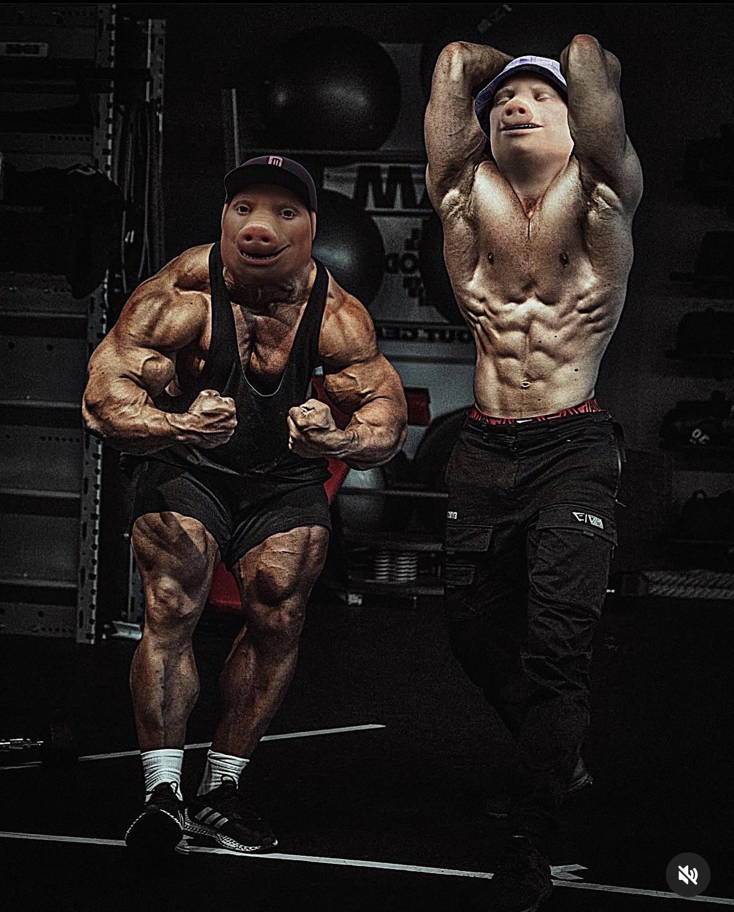

PROFILE
Brandon
Lim
DIT Student at Singapore Polytechnic. Driven by a mission to advocate for planetary survival through technology and awareness.
SPECIALTY
Environmental Tech
LOCATION
Singapore Poly

Philosophy
I embody grit and empathy. Grit for the resilience needed to tackle climate issues, and empathy to understand the human cost of environmental neglect. My outgoing nature drives me to connect and inspire others for a collective future.